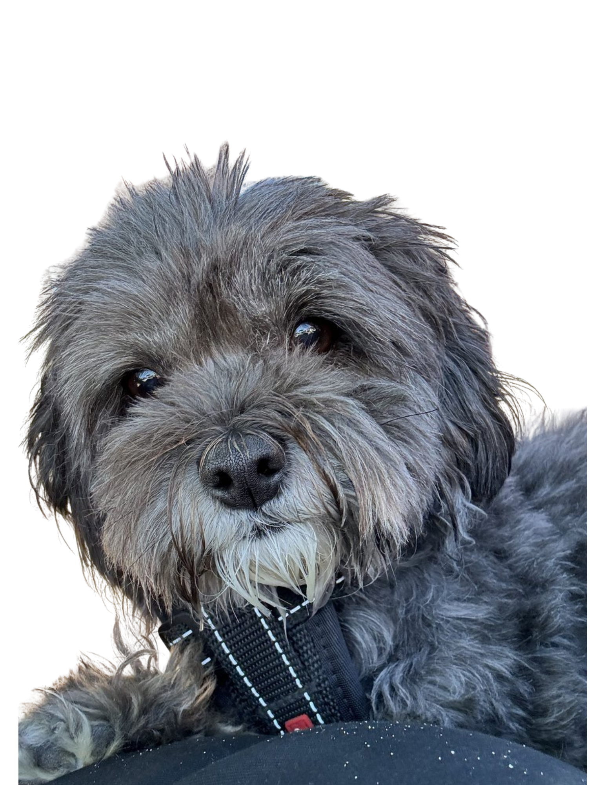
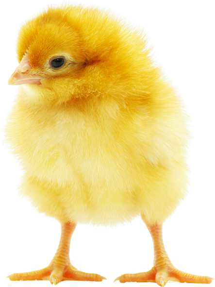
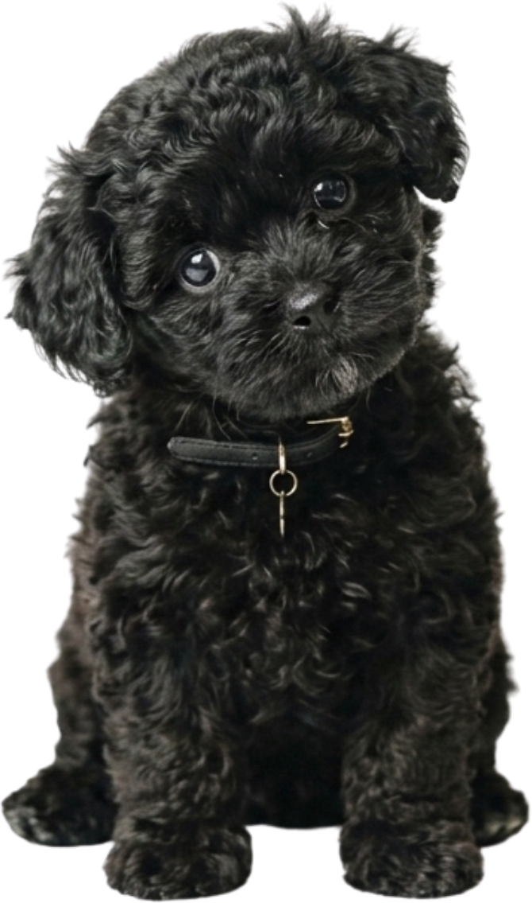
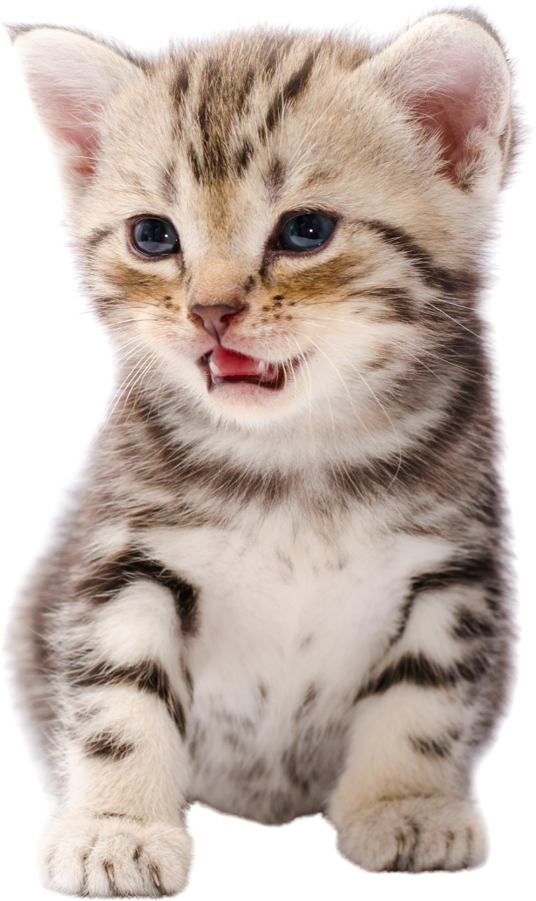

One Health · Resistencia antimicrobiana
Médica Veterinaria · Estudiante de Doctorado en Ciencias Silvoagropecuarias y Veterinarias, Universidad de Chile. Investigo la circulación de Escherichia coli resistente entre animales de compañía, aves de producción y el ambiente.
Siembra por agotamiento en 4 cuadrantes

El inicio de esta carrera comenzó el 2018, al querer entrar a estudiar veterinaria para saber cómo cuidar a mi perrita Chubie. Ahora, ocho años después, creo que soy capaz de hacer algo más grande para cuidarla tanto a ella como a otros animales.
Chubie
Aunque solo el 6% de los tutores de mascotas utiliza dietas crudas exclusivas para sus animales de compañía, más del 50% incorpora carne de pollo o sus derivados como snack o complemento en la alimentación de perros y gatos. Al no recibir tratamiento térmico, esta práctica expone a las mascotas a Escherichia coli patógena aviar (APEC), cuya relación genética con las cepas de Escherichia coli uropatógenas (UPEC) circulantes en caninos y felinos aún se desconoce.
Mi investigación de doctorado busca esclarecer ese vínculo, evaluando el rol de las aves de producción como reservorio de patógenos extraintestinales resistentes a antimicrobianos y su capacidad de generar enfermedad entre especies, en el marco de un enfoque One Health que conecta la salud animal, humana y ambiental.
Actualmente trabajo como asistente de proyectos y coordinadora de tesistas en el laboratorio MicroVet de la Facultad de Ciencias Veterinarias y Pecuarias, Universidad de Chile.
Mi trabajo sigue la ruta que recorre Escherichia coli entre distintos huéspedes: aves de producción, perros y gatos, evaluando la relación entre cepas que circulan en distintas especies bajo un enfoque One Health.

APEC en pollos broiler

UPEC en perros

UPEC en gatos
Memoria de título · 2025
Este trabajo mostró que el tratamiento con oxitetraciclina en pollos broiler favorece la aparición de E. coli resistente a tetraciclinas en camas, deyecciones, comederos y bebederos, y que esa resistencia se asocia a una mayor formación de biopelículas. La capacidad de formar biopelículas disminuyó a medida que bajaba la concentración del antimicrobiano en el ambiente, lo que sugiere que estas comunidades bacterianas actúan como un mecanismo de persistencia de la resistencia dentro de la producción avícola y un punto crítico para su diseminación hacia la cadena alimentaria.
Quiero seguir contribuyendo a la comunidad, aportando las bases que permitan mejorar la regularización de la ingesta de antimicrobianos en el área animal.